Legendă
 |
Limita teritoriului administrativ |

|
Limita intravilanului propus |

|
Limita UTR |

|
Limita subzonă UTR |

|
Limita zonei centrale |

|
Servitute de utilitate publică |

|
Reconfigurare spațiu public urban |

|
Posibile locații pentru parcări publice subterane sau supraterane |

|
Pod/pasaj propus |

|
Delimitări ale zonelor construibile. Realinieri ale fronturilor străzilor |

|
Zona construită protejată |

|
Clădire monument istoric clasată în lista monumentelor istorice republicată în anul 2010
intervenţiile asupra acestora se vor realiza în regim specific |

|
Clădire echivalentă ca valoare monumentelor istorice ce ar putea fi clasată ca monument istoric
intervenţiile asupra acestora se vor realiza în regim specific monumentelor istorice |

|
Clădire cu valoare artistică ambientală
pentru această categorie e interzisă desfiinţarea totală sau parţială, modificarea expresiei arhitecturale, alterarea elementelor arhitecturale caracteristice |

|
Limita incintei Romane |

|
Zona arheologică protejată |

|
Zona naturală protejată de interes conservativ (habitat) - existentă |

|
Zona naturală protejată de interes conservativ - propusă |

|
Zona cu risc mediu-mare de alunecări de teren
Documentaţii geotehnice conf. NP 074-2007 + studii de stabilitate generală. |

|
Zona cu risc mare-foarte mare de alunecări de teren
Expertiza geotehnică pe un teritoriu relevant determinat de expert. |

|
Pista existentă 7-25 (2100m) Aeroportul Cluj-Napoca |

|
Pista extinsă 7-25 (3420m) Aeroportul Cluj-Napoca |

|
Zona de protecție sanitară a surselor de apă, cimitire, unităților cu risc tehnologic |

|
Zona de protecție / de siguranță a infrastructurii feroviare și rutiere |

|
Zona de siguranță / de protecție a magistralelor de gaz metan |

|
Zona de siguranță / de protecție a liniilor de înaltă tensiune |

|
Zona de siguranță / de protecție a magistralelor de alimentare cu apă |

|
Zona de siguranță M.A.P.N. cu avizul statului major general / Zona cu interdicție totală de construire |

|
Limita zonei de servitute aeronautică civilă conform RACR-CADT (zona I, zona II, zona III, zona IV) |

|
Zona de protecție a mijloacelor de navigație aeriană (CNS) și meteorologice conform RACR-CADT |

|
Mijloace de navigație aeriană (CNS) și meteorologice conform RACR-CADT |
Limite
| Limita administrativ teritorială a comunei Florești | |
| Limita intravilan existent | |
| Limita intravilan propus |
Elemente naturale
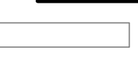 |
Regim de scurgere permanent |
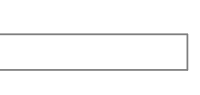 |
Regim de scurgere temporar |
| Rețea hidrografică - ape | |
| Păduri | |
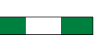 |
Pădure în intravilan |
Căi de comunicație rutieră
| Autostrada | |
| Drum național | |
| Drum județean | |
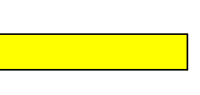 |
Drum comunal |
| Drumuri existente | |
| Clădiri |
Reglementări / propuneri
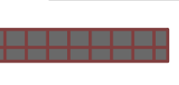 |
Drumuri locale modernizate / propuse |
| Drum expres: TR35 și Varianta Ocolitoare Sud, trasee propuse | |
| Nod denivelat propus | |
| Tren metropolitan - sistem de transport metropolitan rapid Cluj-Napoca - Florești, Magistrala I de metrou; traseu propus |
Zone de protecție
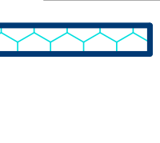 |
Zona cu vestigii arheologice ce necesită descărcarea terenului de sarcină arheologică |
| Zona de protecție a siturilor arheologice | |
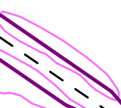 |
Zona protecție obiective aparținând Ministerului Apărării Naționale |
| ZP - zona de protecție a monumentului istoric ZCP - zona construită protejată a monumentului istoric planșa desenează un singur simbol pentru ambele |
Zone de protecție a drumurilor
| Zona de protecție propusă pentru drumurile expres - variabilă | |
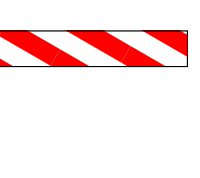 |
Zona de protecție - 22 m din marginea îmbrăcăminții asfaltice, de o parte și de alta a DN E60 |
| Zona de protecție - 20 m din marginea îmbrăcăminții asfaltice, de o parte și de alta a DJ 105 L / DJ 107 M | |
| Zona de protecție - 18 m din marginea îmbrăcăminții asfaltice, de o parte și de alta a drumului comunal |
Zone cu interdicții permanente de construire
| Centura verde de protecție a localității (20 m de la limita intravilanului) | |
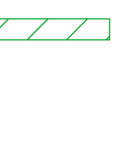 |
Zona verde de protecție 15 m de la limita albiei minore pentru apele curgătoare și la 15 m de la nivelul normal de retenție pentru lacuri |
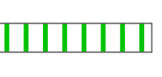 |
Zona protecție pădure (50 m de la lizieră) |
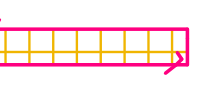 |
Zona protecție sanitară cimitir (rază 50 m) |
Zone cu interdicție temporară de construire
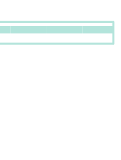 |
Zona cu riscuri naturale - risc geotehnic, alunecări de teren
interdicție temporară de construire |
| Zona cu riscuri naturale - zonă inundabilă
interdicție temporară de construire până la obținerea avizului A.A.R. |
Echipare edilitară
Zone de protecție față de construcții și culoare tehnice.
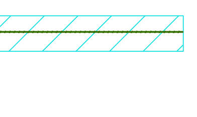 |
LEA 20 kV (zonă de protecție 12 m din ax, pe fiecare parte) |
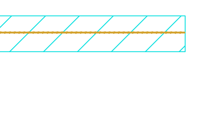 |
LEA 110 kV (zonă de protecție 18,5 m din ax, pe fiecare parte) |
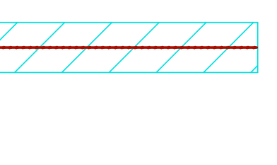 |
LEA 220 kV (zonă de protecție 27,5 m din ax, pe fiecare parte) |
| Stâlp | |
| Post de transformare | |
| Centrală hidroelectrică | |
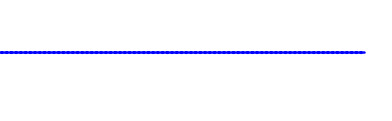 |
Conductă de aducțiune apă potabilă Gilău-Cluj |
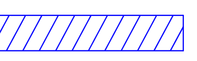 |
Zona de protecție conductă aducțiune apă |
| Captări de apă de suprafață sau izvoare | |
| Rezervor de apă - capacitate 200 m³, cu zonă de protecție R = 20 m | |
| Rezervor de apă îngropat - propunere | |
| Stație de pompare a apei potabile | |
| Stație de pompare a apei uzate | |
| Rețea majoră de distribuție a apei potabile | |
| Rețea propusă de distribuție a apei potabile | |
| Rețea majoră de canalizare a apei uzate menajere | |
| Rețea colectoare a apei uzate menajere | |
| Stație ecologică de tratare a apelor uzate | |
| Rețea majoră distribuție gaze | |
| Stație reglare gaze |